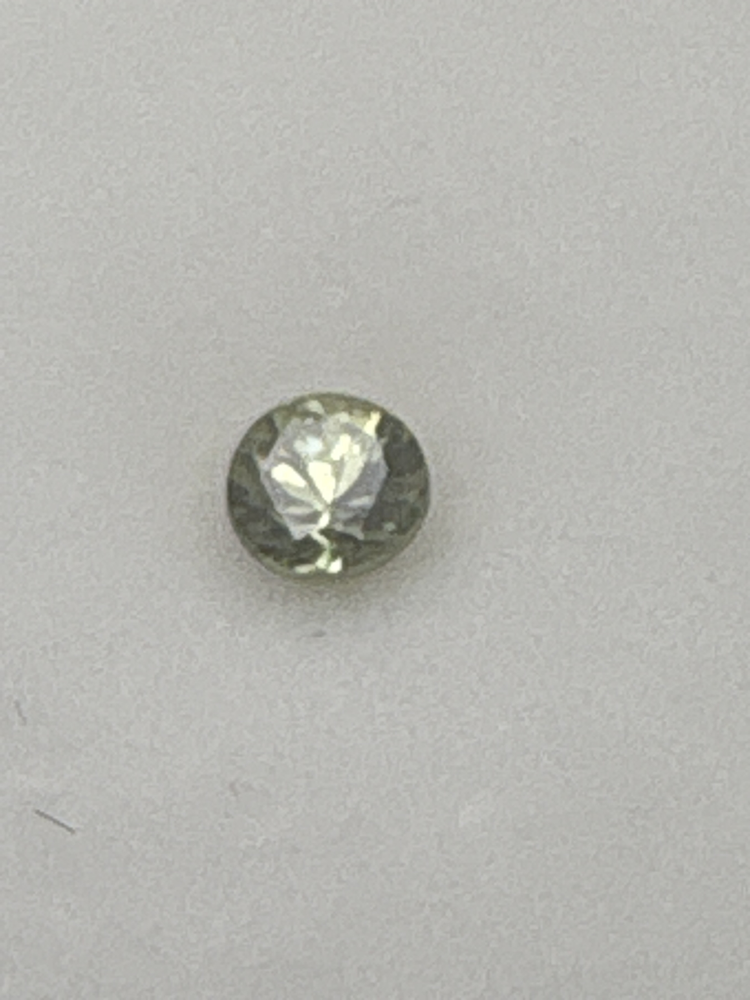

The Gem Drawer › No. 75

A small round garnet labeled demantoid, muted olive rather than vivid green.
| Catalogue no. | #75 |
|---|---|
| As labeled | Demantoid Garnet |
| Shape / cut | Round |
| Weight | Not recorded |
| Measurements | Not recorded |
| Colour | Muted yellowish-green/olive |
| Clarity / condition | Not recorded |
Interested in this stone, or in the collection as a whole? Terry VanWormer can answer questions about it.
Click here to inquireor email Terry directly at maxrebo34@gmail.com